|
Our Current Production
|
When All the Letter Writers Have Died by Tricia Schwaab
August 8 through August 25, 2013
Tickets & Reservations through Brown Paper Tickets
| 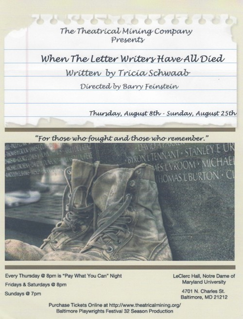 |
Brief Synopsis:
Lori comes to the Vietnam Veterans Memorial to connect with the father she never met and to be alone in the presence of others. She meets Andrew, a college student doing research for a paper. When he tries to strike up a conversation, Lori appears to be uninterested in being friends with him. But Andrew persists and Lori finds herself looking forward to spending time with him.
As their friendship develops, Andrew discovers Lori's secret, and he's troubled by what he learns. He's not sure he can bear losing Lori, whom he cares about, so soon after meeting her. Andrew decides to share his own battle with depression in order to save Lori from her inner demons.
Interwoven with the stories of others who visit the wall, Lori and Andrew's story is about finding their individual paths to healing.
|
Playwright's Bio:
Tricia Schwaab is delighted to have her first full-length play produced as part of the Baltimore Playwrights Festival. When she is not writing, she fancies herself a freelance editor. As an avid drinker of both coffee and tea, she likes to think she gets her inspiration from more than the caffeine. She is currently at work on her next full-length play.
|
|
Read Morgan Halvorsen's review of When the Letter Writers Have All Died for MD Theatre Guide |
|
Our Past Productions
|
Sick Stories, Gentle Grandaddy by S. Ann Johnson
July 11 through July 28, 2013
Tickets & Reservations through Brown Paper Tickets
more info>
|
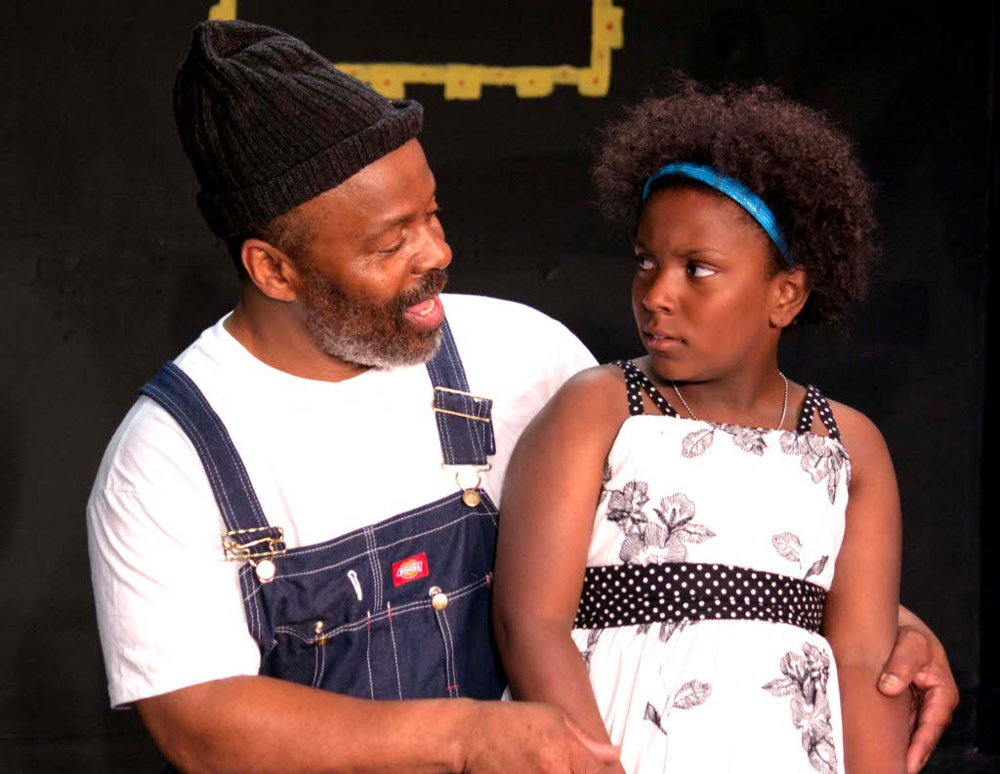
|
Brief Synopsis:
Little Miss Mabelle would describe her maternal grandfather as a sweet, old man who makes her laugh and spoils
her rotten. So the Sick Stories her family members share about him must be figments of their imagination, right?
Wrong. In Sick Stories, Gentle Granddaddy, the drunken past conflicts with the docile present of a husband,
father--and Gentle Granddaddy.
|
|
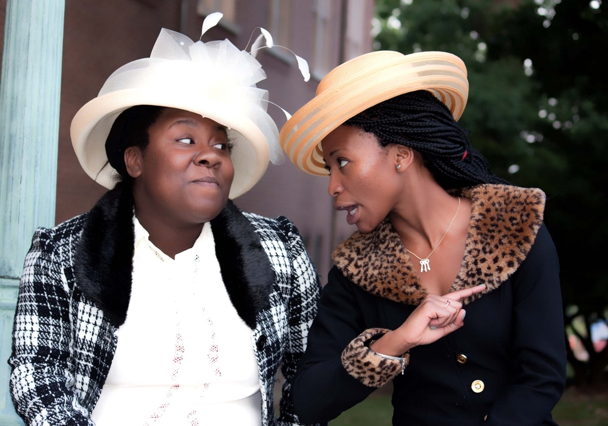
|
Playwright's Bio:
S. Ann Johnson is a professional writer and editor born and raised in Baltimore, Maryland. She holds a BA in journalism
from Penn State University and a MS in professional writing from Towson University. By day, she is a web producer for
WJZ-TV/CBSBaltimore.com. By night, she is a performing artist. She most recently starred in her first musical:
The Bubbly Black Girl Sheds Her Chameleon Skin at Strand Theater Company, where she is a board member.
Sick Stories, Gentle Granddaddy is her second penned play. Her first: The XX Chromosome Genome Project, a multicultural
choreopoem that will be featured in Artscape 2013 on July 19 at the Baltimore Theater Project.
|
|
Check out ZSun-nee Matema's rave review of Sick Stories, Gentel Granddaddy for DC Metro Theater Arts! |
|
|
Productions for Baltimore Playwrights Festival 31st Season
|
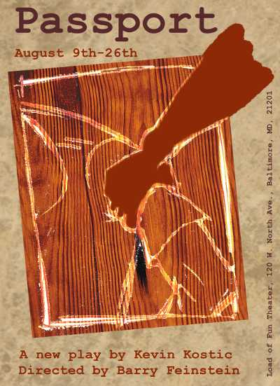
|
Passport
by Kevin Kostic
directed by Barry Feinstein
August 9 - 26 2012
It's December 27th, 2007 in Kisumu, Kenya. People have taken to the streets to protest the questionable results of the presidential election.
Jeff, a humanitarian worker burnt-out from his job and estranged from his wife, finds himself trapped in his hotel room due to the riot
occurring outside his window. Hearing screams, he pulls in two Kenyan women who will forever change his life.
more...
|
|
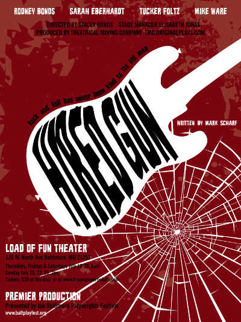
|
Hired Gun
by Mark Scharf
directed by Stacey Bonds
July 12 - 29 2012
Once there was the King, the Killer and the Fat Man of Rock 'n Roll. But time has left the Fat Man forgotten in the Louisiana bayou. Jesse now
has the fastest and cleanest hand in rock. Jesse's a hired gun; a studio musician who chooses his projects. Dewitt can see his way back to the
top with Jesse playing for him. Intrigued by the faded rockabilly star, Jesse travels to the bayou only to find out that rock 'n roll never
dies - even when it should.
more...
|
|
|
In collaboration with Heralds of Hope Theater
|
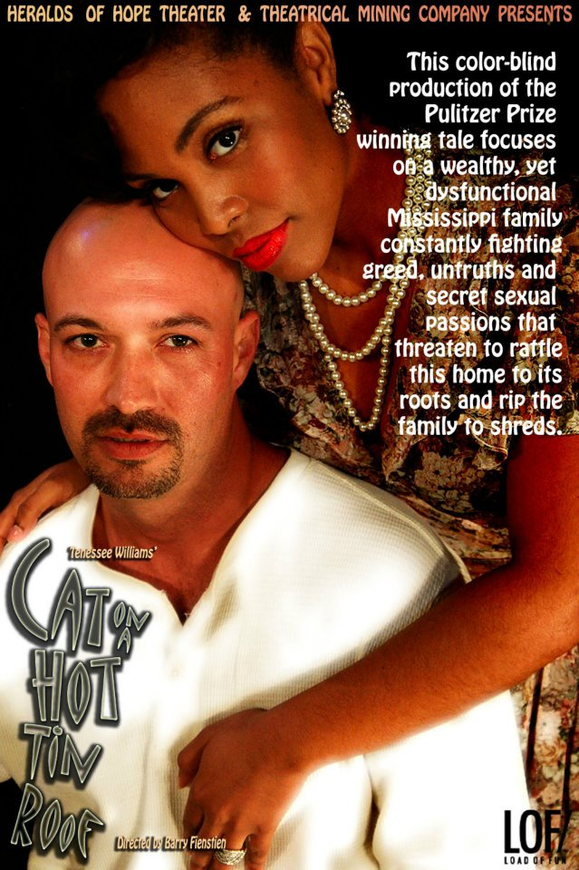
|
Cat on a Hot Tin Roof
by Tennesse William
directed by Barry Feinstein
November 4 - 27 2011
Quote from City Paper's rave review:
With its mixed-race cast, this production interrogates not only the idealized American family but the American South. That
Big Daddy is played by an actor who is black, and that he is "the Delta's biggest cotton planter" in what is ostensibly the
era of Jim Crow, invests an added layer of significance to his rise from peon to patriarch and a sense of urgency to his
insistence on self-preservation.
[...]
Director Barry Feinstein and set designer Prince NO-RA make such effective use of the black-box space at Load of Fun Theater
that it seems like the only way the play should be staged.
more...
|
Productions for Baltimore Playwrights Festival 30th Season
|
|
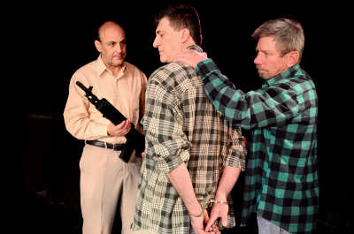
|
Abraham and Isaac
by Stephen Schulze
directed by Barry Feinstein
August 11 - 28 2011
16 year old Vicky Barrow has been shot and killed in her high school. One of the three shooters has escaped
and Vicky's father, Charlie, is in relentless pursuit. What happens in the next 72 hours will astonish you.
Don't miss this powerful original play by first time playwright, Stephen Schulze.
more...
|
|
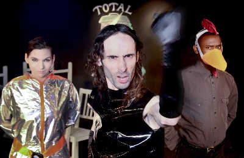
|
Self,Inc.
by J-F Bibeau
directed by Da'Minique Williams
July 14 - July 31, 2011
In the not-too-distant future, Francis Elfman is a jaded company accountant,
uninterested in others and generally indifferent to society. He spends half
his time dodging the advances of an unhappy married supervisor, a playful
engineer, and the department janitor, while trying to survive under the CEO's
wild new policies of conformity.
To keep himself sane and regain a sense of individuality, he busies himself
secretly building a time machine and is suddenly visited by his future self
from some five months ahead, who reacts to him with a serious case of
irrational resentment. They spend the next following months trying to prevent
the disastrous corporate outcome witnessed by Francis' future self, while
jumping through vaudeville-like hoops to keep their secret from their
self-interested co-workers.
more...
|
Productions for Baltimore Playwrights Festival 29th Season
|
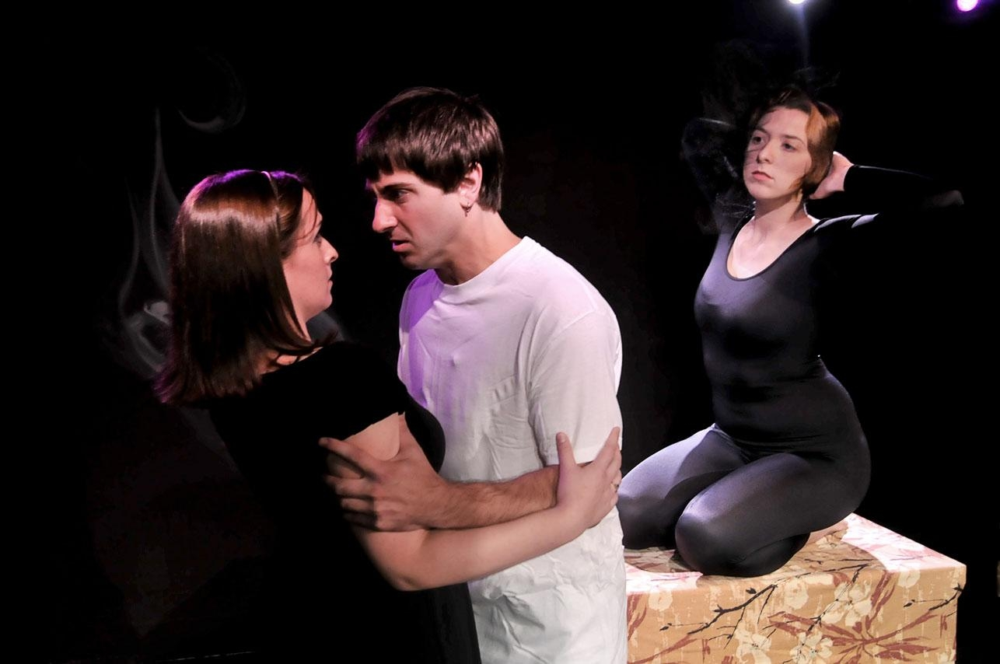
|
This Is Why We Can't Have Nice Things
by Ken Greller
directed by Peter Davis
August 12 - 29 2010
When you want things a certain way, you don't see things the way they are. This Is Why We Can't Have
Nice Things is a heightened memory play; a humorous power struggle between two best friends and with
their respective lovers. Their individual obsession with desire and control creates unintended consequences
that change their relationships forever.
more...
|
|
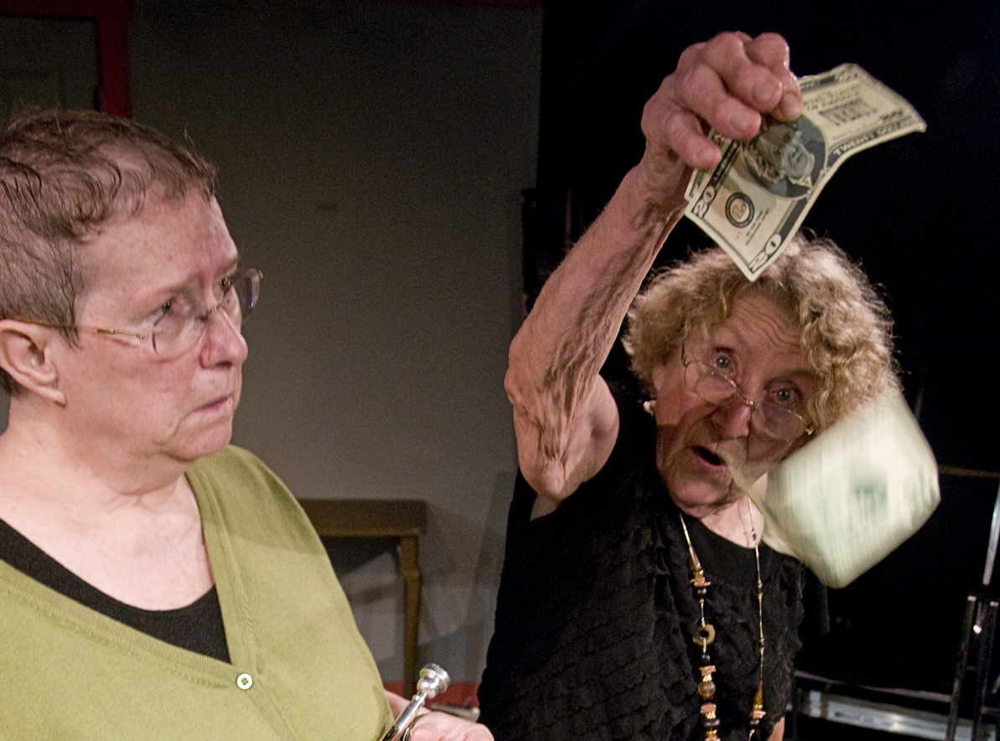
|
Black Widows
by Susan Middaugh
directed by Barry Feinstein
July 8 - July 25, 2010
Black Widows, a new dark comedy, tells the sometimes comic story
of two elderly female crooks, played by Ann Mainolfi and Babs Dentz,
who devise a get-rich-quick scheme
that spells trouble for a couple of homeless men in Los Angeles and
ultimately leads to tragic consequences.
more...
|
Productions for Baltimore Playwrights Festival 28th Season
|
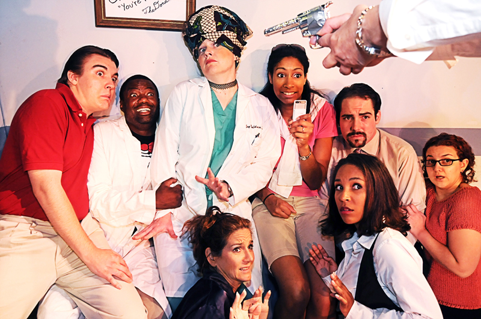
|
Turducken
by Lisa Hodsoll
directed by Andrew Peters
July 16, 2008 - August 2, 2009
Something strange is happening and it's not just the missing body. Secrets, dysfunction and all out lunacy are knee
deep in this turducken. It's one Thanksgiving you don't want to miss.
more...
|
|
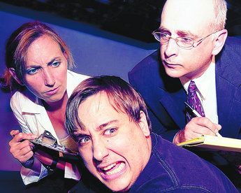
|
The Ape on the Church Steps
by JM Dinson
directed by Barry Feinstein
August 13 - August 30, 2009
A father, his son, and a holy spirit have it out over death, faith, art, & love -with a little help from the ape in us all.
more...
|
Productions for Baltimore Playwrights Festival 27th Season
|
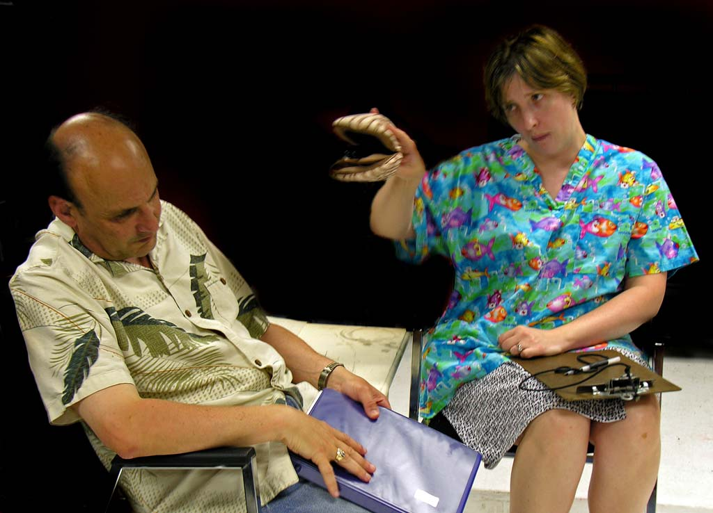
|
Jarvis Legend's Borrowed Skin
by Julie Lewis
directed by Nancy Murray
June 26, 2008 - July 13, 2008
Jarvis Legend's Borrowed Skin is a dark comedy about an obsessed writer and the characters
embodied in his play. With only 37 pages completed, and two weeks to the deadline, Jarvis
finds a representative from the granting council at his door demanding to see a near-completed
script. Spending every waking hour writing Borrowed Skin, and every sleeping hour dreaming
of it, Jarvis' obsession upsets his overbearing girlfriend, who commits him to an addiction
rehabilitation center. There he is forced to remain an inpatient, without access to pen or paper
until his addiction to writing is "cured". With mounting pressure from his characters, Jarvis
must find a way to finish Borrowed Skin, or go mad.
more...
|
|
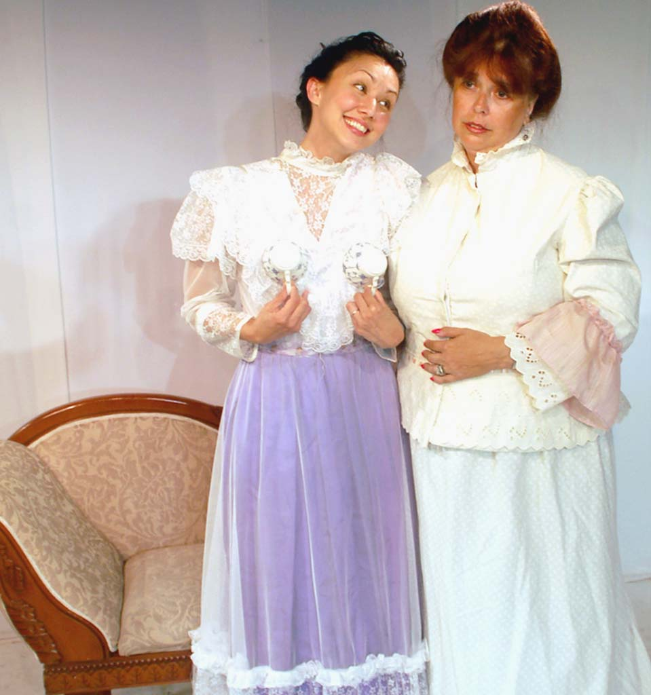
|
Gay Deceivers
by PS Lorio
directed by Barry Feinstein
July 31, 2008 - August 17, 2008
In the annals of history, along with the miraculous achievements of Edison, Whitney, Ford, and Einstein are innumerable
lesser-known and long-forgotten accomplishments. Gay Deceivers is the story of one such woman and her ingenious
contribution to modern life.
It is the autumn of 1909. In a golden era when new inventions lent a sparkle to drab, everyday life, Tallulah (Tolly)
Roswell feels herself too plain to entice the attention of her progressively minded husband, Warren. In a desperate attempt
to get Warren's attention, Tolly devises a plan to "supplement" her modest figure. When her first attempt proves a dismal
failure, she continues, undaunted, to develop a practical system for bosom enhancement which she proudly describes as
"Gay Deceivers". Rose, Tolly's best friend and sideline supporter of the Suffragist cause, is unable to resist getting
caught up in Tolly's scheme, though she often expounds on behalf of the underlying principle. Nelson, Tolly's younger
brother, supplies the fly for the ointment, as he and his best friend, Rudy, nearly ruin the whole lot in their desperation
to earn money to attend the Hudson-Fulton Exhibition where there will be a real demonstration of flight. Reverend Godwin
tries to keep a lid on the shenanigans-as the moral conscience of his community-and at least long enough to collect a hefty
contribution from an aging widow in his congregation.
This quaint little comedy is chock-full of tricks and traps and the mischief which results from good intentions. Gay Deceivers
is a 6 character, unit set play which explores the "history" of breast augmentation in a story where the deception is gay and
gay deceivers abound.
more...
|
Productions for Baltimore Playwrights Festival 26th Season
|
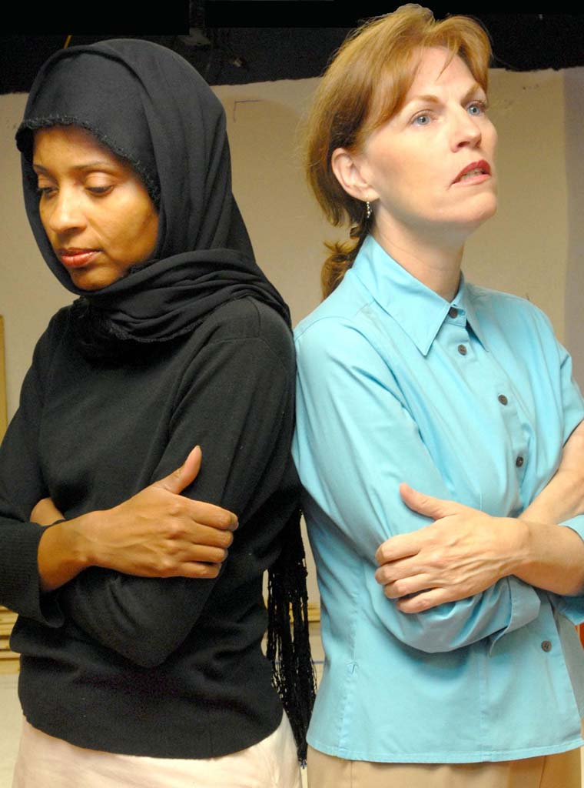
|
The Blessed Mothers of War
by Ty DeMartino
directed by Barry Feinstein
July 5 - 22, 2007
The play focuses on two mothers -- one American, one Arab -- searching for their sons during a time of war. Zaira wanders the streets
of the Middle East, asking if anyone has seen her son, Raja. Rosie, the owner of a small bookshop in Appalachia, waits for correspondence
from her only son, Brian, who is stationed overseas guarding prisoners of war. When Brian receives an early discharge due to a mysterious
injury, he returns home to a hero's welcome. However, Brian's internal struggle about what really happened in combat pushes him to the
edge and away from his mother. As Rosie reaches out to her troubled son, Zaira finally finds Raja. The lives of these two women parallel
one another and show the heart-breaking effects of war on all mothers -- no matter on which continent or side of the enemy line they reside.
The structure of The Blessed Mothers of War mirrors Greek tragedy with a chorus of townspeople offering commentary on the action on stage
and on war in general. The play shows how war can tear apart a world, a community and a mother and child.
more...
|
|
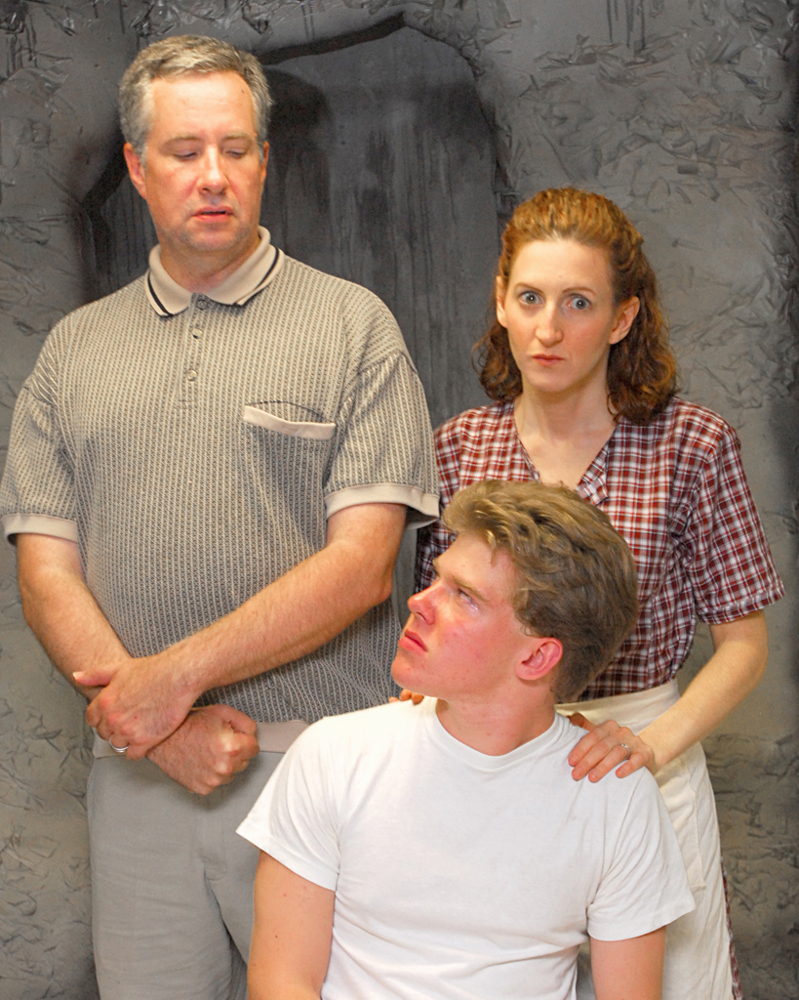
|
Almost Vermilion
by Sonja Kinzer
directed by Kathy McCrory
August 2 - 19, 2007
Set in the 1950's in a rural WV farming community, Almost Vermilion is the story about the oppressive life of a creative young boy
named Henry and his inventive mother Dorothy, who tirelessly attempts to balance out the tension & chaos ever- erupting by way of
her overbearing husband, Clyde. Henry, who is about to turn 16, is an emerging art prodigy...a talent lovingly nurtured by his mother
and desperately despised by his father who finds his art 'sissified' and downright useless, to say the least. Meanwhile, Paul Edwards
the town doc and lifelong friend of Dorothy continues to encourage Henry with his artwork, all the while carrying a secret of his own.
As Clyde's ill-mannered nephews settle in for a long, uncomfortable visit, both Henry and Dorothy struggle to come to terms with their
very clouded futures. Called away to a family emergency, Dorothy begs Clyde to let her son come with her but is instead forced to leave
him behind. When her worst nightmare is realized, Dorothy's struggle challenges her ability to trust in God, to trust in anything.
Soon, it isn't possible to 'keep the peace' any longer, and she is forced to face the truth about her years of disappointment and the
lifetime she spent wondering 'what could have been.' Isolation, oppression and ignorance are the opponents to the struggle for freedom,
artistic expression, and evolution of self for both Henry and his mother. It is an account of a sometimes ugly journey that boldly spits
in the face of all that is supposed to transpire within the protective walls of hearth and home.
more...
|
|
|